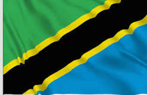
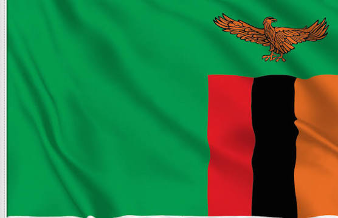
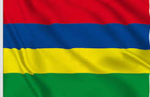

REGIONAL NETWORK
Our Presence Across Africa
Through our regional network and trusted research partners, Kutz Univar Limited provides reliable commercial intelligence, business information and risk management support across Africa.
KUTZ UNIVAR NETWORK
Africa Coverage
Regional Network
Kenya
Uganda

Tanzania

Zambia

Mauritius